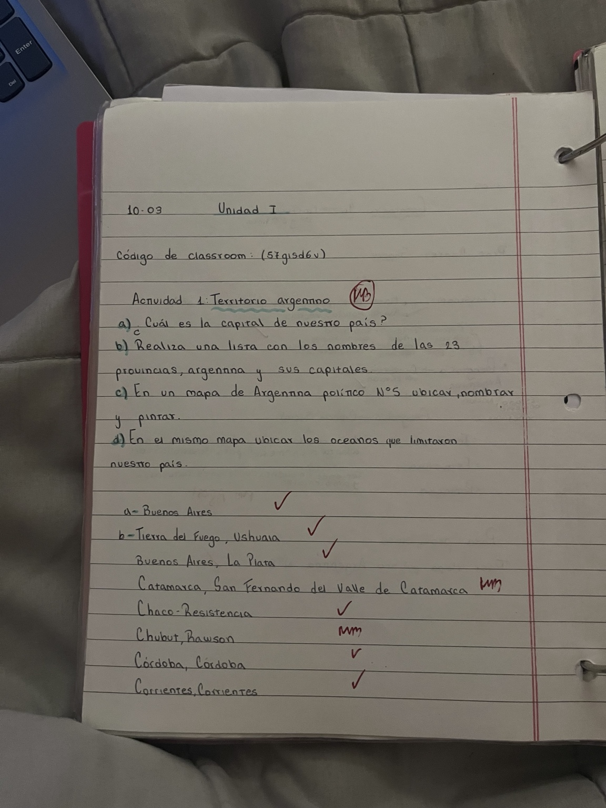
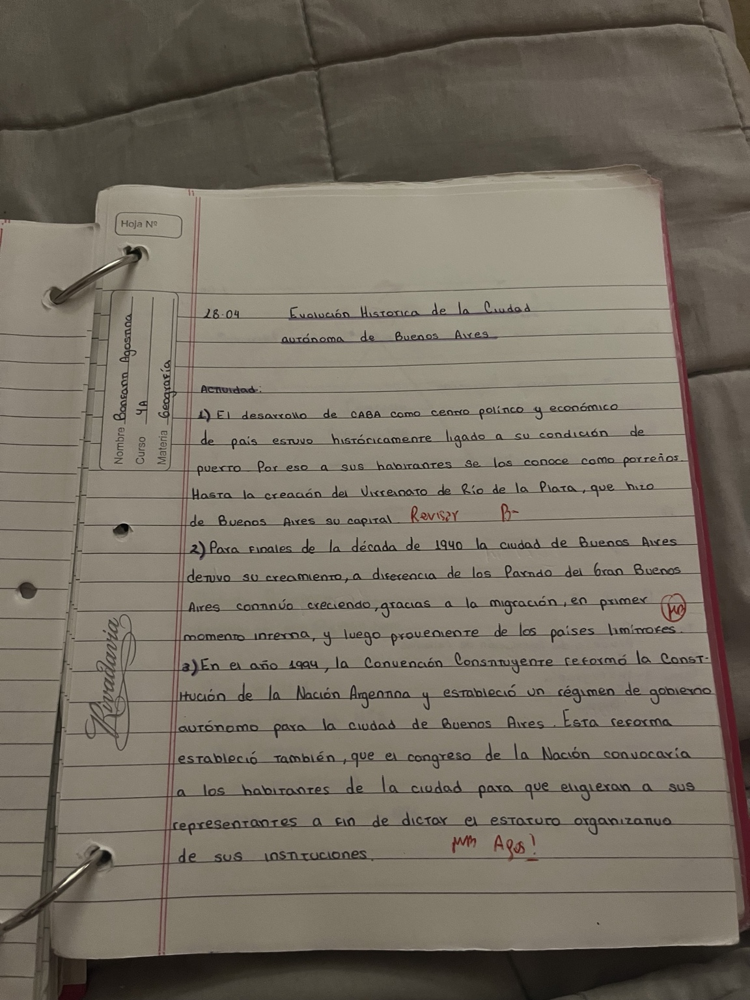

01 · Estado y territorio
Conceptos básicos de Geografía como ciencia social, territorio, estructura, población y Estado-nación.
Ver tema4.º año · Contenidos trabajados durante el año
Esta página reúne los principales contenidos que trabajamos en la carpeta durante el año. La Geografía es una ciencia social que estudia el territorio, la población y las relaciones que se producen entre la sociedad y el espacio donde vive.
A lo largo de las diferentes páginas se pueden encontrar los conceptos sobre Estado, territorio, límites, fronteras, la conformación del Estado argentino, la Conquista del Desierto, la cuestión de las Islas Malvinas y los temas de la Unidad 2.
Comenzar a recorrer la página →
Conceptos básicos de Geografía como ciencia social, territorio, estructura, población y Estado-nación.
Ver temaQué es un límite, qué es una frontera y por qué las zonas fronterizas pueden tener intercambios sociales, culturales y económicos.
Ver temaLos principales acontecimientos históricos que permitieron la formación y consolidación del territorio argentino.
Ver temaLa Conquista del Desierto, las relaciones con los pueblos originarios y la importancia de las Islas Malvinas para la soberanía argentina.
Ver tema


